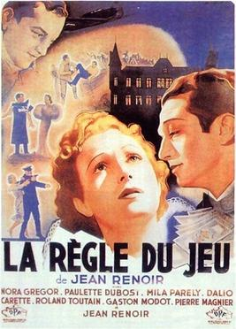

Jean Renoir
1939
110 minutes
You don't go into this one with high hopes, even though it has a very good reputation as a film. There's only so excited you're going to get watching what you assume will be a comedy of manners from the 1940s, although Jean Renoir as a director seems promising. You remember liking Boudu Saved From Drowning when you saw it with your belated wife at the revival theater.
This turns out to be funnier and weirder than you expected. You're not completely in love, but at least you aren't bored for two hours. Some parts remind you a bit of A Little Night Music, the Sondheim musical, which you saw on television long ago without knowing what the hell it was and managed to get some of the ear worm songs stuck in your head. And there's a surprising scene where all the wheels come off that seems farcical and deliciously complicated, as if Robert Altman decided to direct the finale of a Marx Brothers film. It takes some sad turns at the end as it unravels to its inevitable tragic conclusion, but it's a wild and complex ride along the way, and it's particularly funny to see Jean Renoir actually has some acting chops and a talent for comedy, stumbling along in his ridiculous bear suit. Can Hitchcock do that?
Time to choose something different: